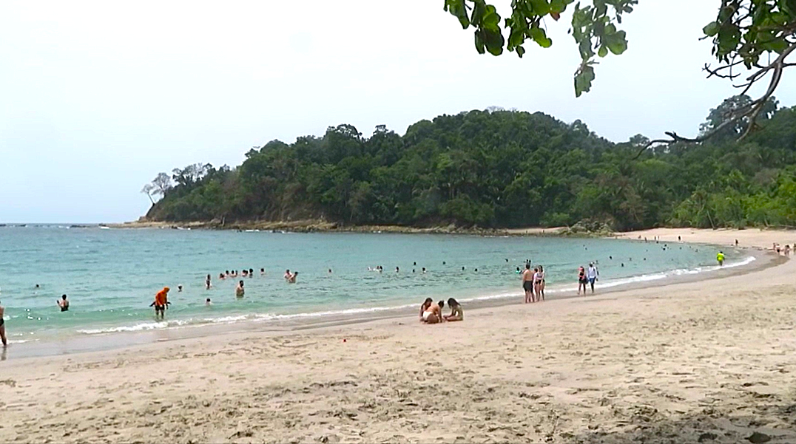

Manuel Antonio National Park is the most popular national park in Costa Rica and for good reason. The park is literally a beach and wildlife paradise, housing some of the densest concentrations of wild animals in the whole entire country.
The land mammals of Corcovado have to be the highlight of Manuel Antonio, with 3-Toed Sloths (Top left, top center) being my favorite. One particular sloth I got to see was lounging in the trees right above the trail to the Manuel Antonio Beach, which was extremely adorable to see. I also found a White-tailed Deer (Top right) and a variety of monkeys in the rainforests here, including squirrel monkeys (bottom left, bottom center), which are my favorite and the cutest ones in Costa Rica, as well as Howler monkeys (bottom right) up in the canopy. While not as much as Corcovado National Park, the variety of land mammals in Manuel Antonio is still very impressive.


Besides mammals, so much other wildlife can be found in this park. Birds like Parakeets (top left) and the extremely rare Potoo bird (top center) inhabit the trees of the park, just like frogs (top right) and iguanas (bottom left, bottom center). Finally, I even got to see a crocodile (bottom right) lounging in a small pond at the park entrance, which is actually the first time I actually saw one in the wild. Just like Corcovado, the sheer variety and abundance of wildlife in Manuel Antonio is astonishing despite the larger crowds in the park.